Loading results.
The trust point of a flight is the earliest prediction from which every later interval is no wider than a window W and contains the true touchdown. Trust lead is touchdown time minus trust point. A flight that is never trusted gets a lead of zero.
Hypotheses
Trust lead
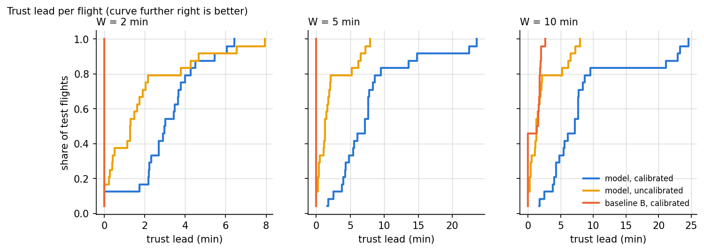
Coverage and width by distance band
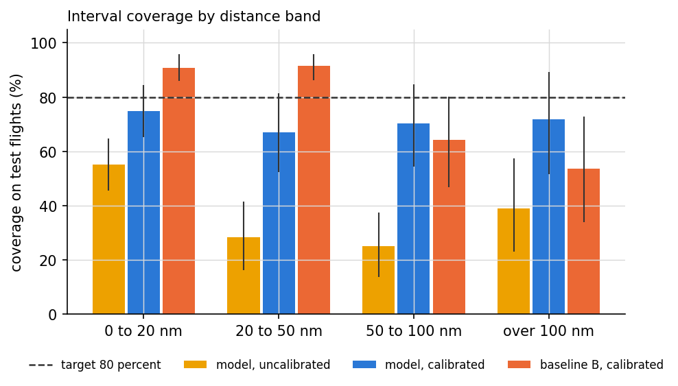
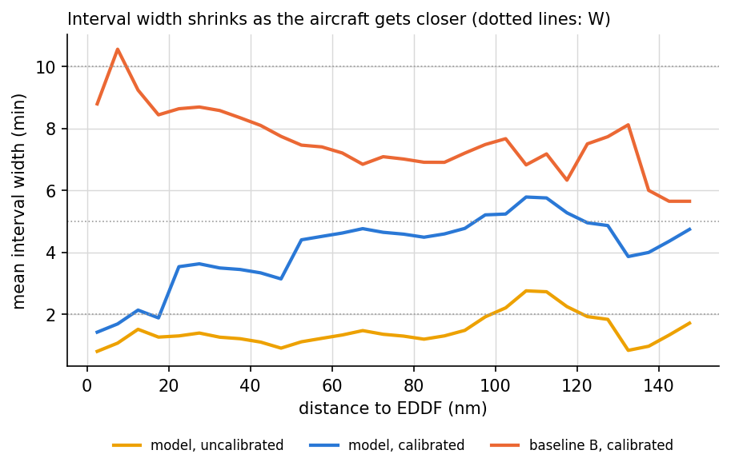
Point error at fixed distances
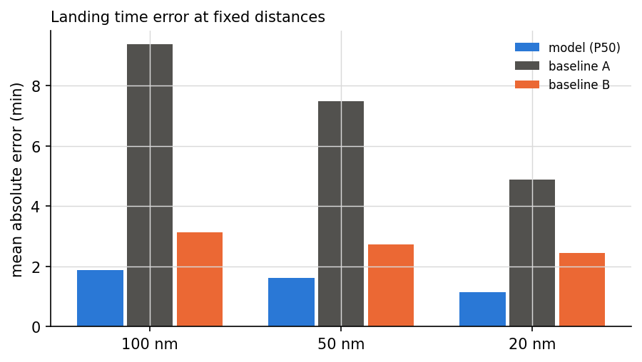
Ablations
What drives interval width
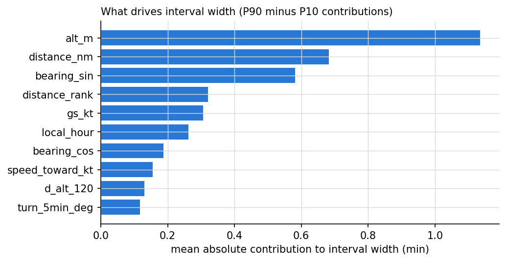
Further statistics
Exploratory. They explain the hypothesis results and do not change any verdict.
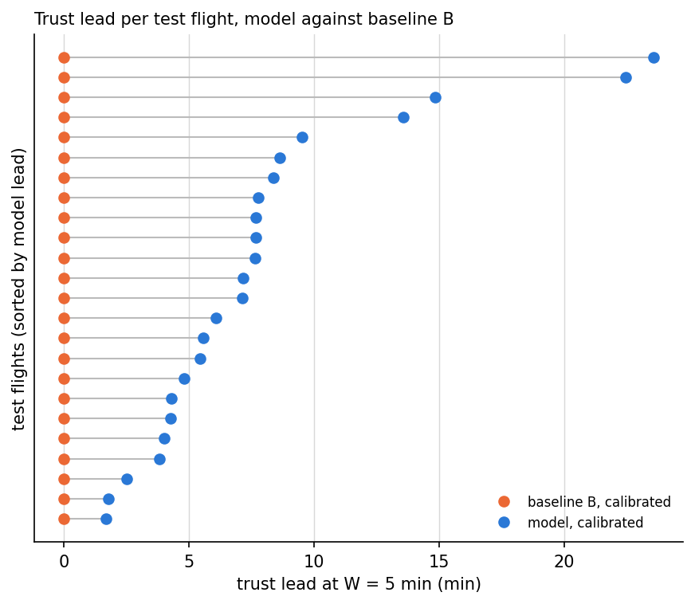
Interval score, model minus baseline B
Width plus a penalty for each miss. Lower is better; negative differences favour the model.
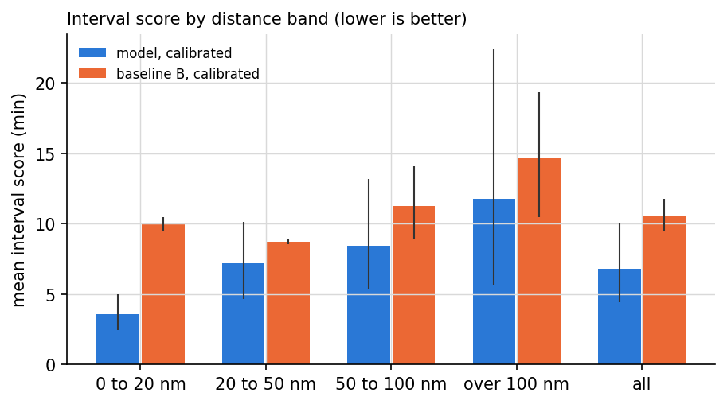
Paired point error at fixed distances
Quantile reliability
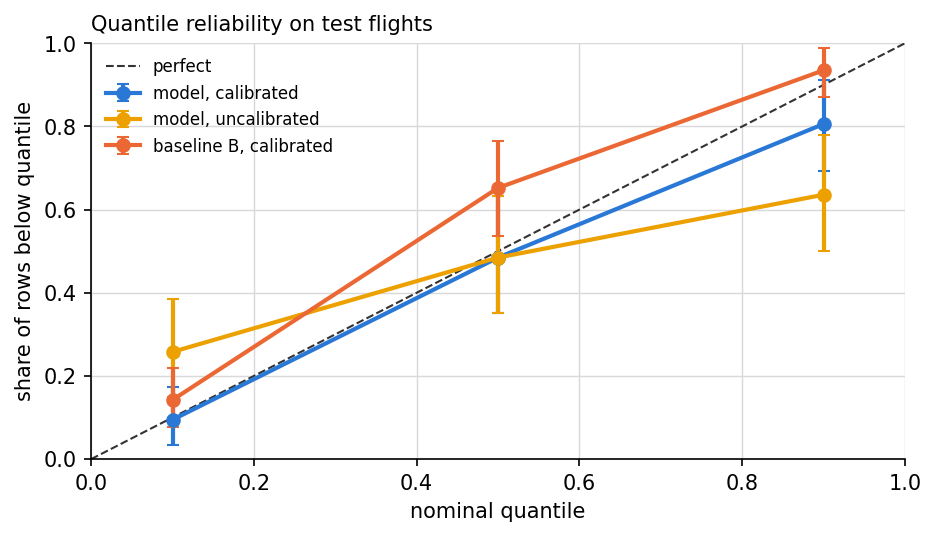
Calibration drift across the evening
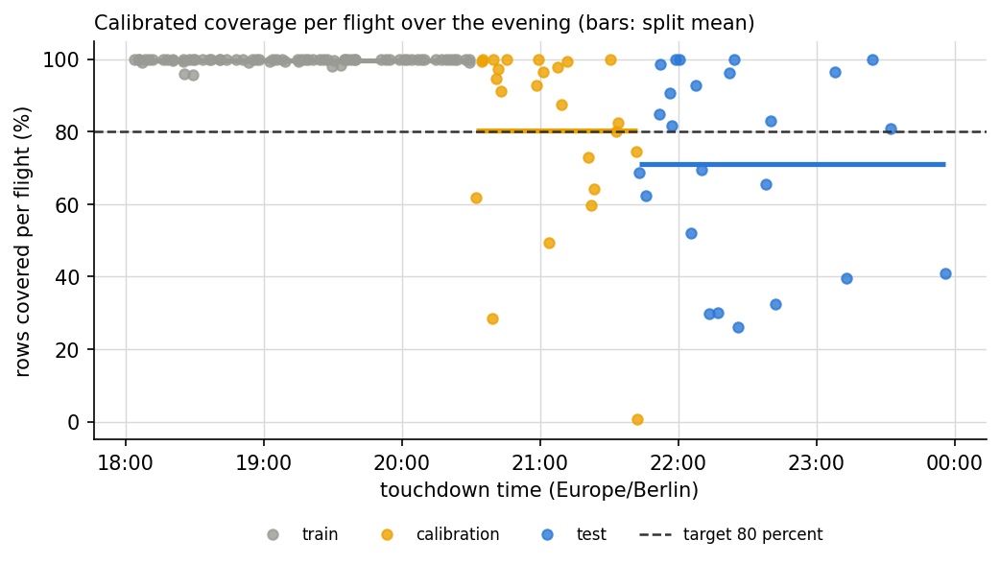
Data
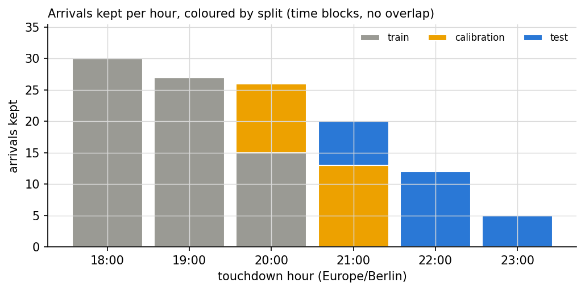
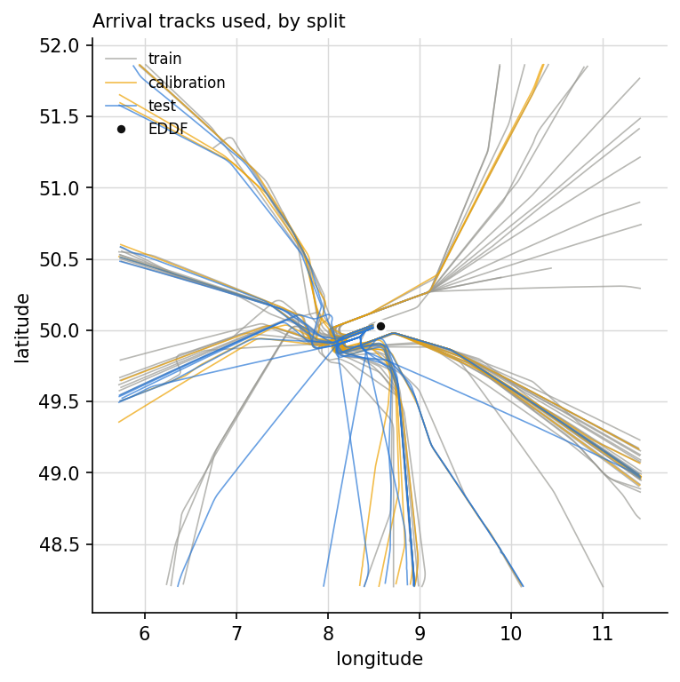